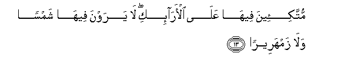
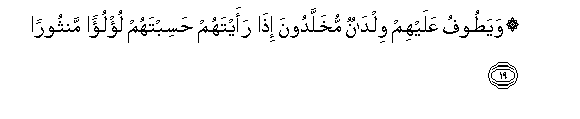

Sacred Texts Islam Index
Hypertext Qur'an Unicode Palmer Pickthall Yusuf Ali English Rodwell
Sura LXXVI.: Dahr, or Time, or Insān, or Man. Index
Previous Next

The Holy Quran, tr. by Yusuf Ali, [1934], at sacred-texts.com
Sura LXXVI.: Dahr, or Time, or Insān, or Man.
Section 1
1. Hal ata AAala al-insani heenun mina alddahri lam yakun shay-an mathkooran
1. Has there not been
Over Man a long period
Of Time, when he was
Nothing—(not even) mentioned?
2. Inna khalaqna al-insana min nutfatin amshajin nabtaleehi fajaAAalnahu sameeAAan baseeran
2. Verily We created
Man from a drop
Of mingled sperm,
In order to try him:
So We gave him (the gifts).
Of Hearing and Sight.
3. Inna hadaynahu alssabeela imma shakiran wa-imma kafooran
3. We showed him, the Way:
Whether he be grateful
Or ungrateful (rests
On his will).
4. Inna aAAtadna lilkafireena salasila waaghlalan wasaAAeeran
4. For the Rejecters
We have prepared
Chains, Yokes, and
A Blazing Fire.
5. Inna al-abrara yashraboona min ka/sin kana mizajuha kafooran
5. As to the Righteous,
They shall drink
Of a Cup (of Wine)
Mixed with Kāfūr,—
6. AAaynan yashrabu biha AAibadu Allahi yufajjiroonaha tafjeeran
6. A Fountain where
The Devotees of God
Do drink, making it
Flow in unstinted abundance.
7. Yoofoona bialnnathri wayakhafoona yawman kana sharruhu mustateeran
7. They perform (their) vows,
And they fear a Day
Whose evil flies far and wide.
8. WayutAAimona alttaAAama AAala hubbihi miskeenan wayateeman waaseeran
8. And they feed, for the love
Of God, the indigent,
The orphan, and the captive,—
9. Innama nutAAimukum liwajhi Allahi la nureedu minkum jazaan wala shukooran
9. (Saying), "We feed you
For the sake of God alone:
No reward do we desire
From you, nor thanks.
10. Inna nakhafu min rabbina yawman AAaboosan qamtareeran
10. "We only fear a Day
Of distressful Wrath
From the side of our Lord."
11. Fawaqahumu Allahu sharra thalika alyawmi walaqqahum nadratan wasurooran
11. But God will deliver
Them from the evil
Of that Day, and will
Shed over them a Light
Of Beauty and
A (blissful) Joy.
12. Wajazahum bima sabaroo jannatan wahareeran
12. And because they were
Patient and constant, He will
Reward them with a Garden
And (garments of) silk.

13. Muttaki-eena feeha AAala al-ara-iki la yarawna feeha shamsan wala zamhareeran
13. Reclining in the (Garden)
On raised thrones,
They will see there neither
The sun's (excessive heat)
Nor (the moon's) excessive cold.
14. Wadaniyatan AAalayhim thilaluha wathullilat qutoofuha tathleelan
14. And the shades of the (Garden)
Will come low over them,
And the bunches (of fruit),
There, will hang low
In humility.
15. Wayutafu AAalayhim bi-aniyatin min fiddatin waakwabin kanat qawareera
15. And amongst them will be
Passed round vessels of silver
And goblets of crystal,—
16. Qawareera min fiddatin qaddarooha taqdeeran
16. Crystal-clear, made of silver:
They will determine
The measure thereof
(According to their wishes).
17. Wayusqawna feeha ka/san kana mizajuha zanjabeelan
17. And they will be given
To drink there of a Cup
(Of Wine) mixed
With Zanjaḅīl,—
18. AAaynan feeha tusamma salsabeelan
18. A fountain there,
Called Salsabīl.

19. Wayatoofu AAalayhim wildanun mukhalladoona itha raaytahum hasibtahum lu/lu-an manthooran
19. And round about them
Will (serve) youths
Of perpetual (freshness):
If thou seest them,
Thou wouldst think them
Scattered Pearls.
20. Wa-itha raayta thamma raayta naAAeeman wamulkan kabeeran
20. And when thou lookest,
It is there thou wilt see
A Bliss and
A Realm Magnificent.
21. AAaliyahum thiyabu sundusin khudrun wa-istabraqun wahulloo asawira min fiddatin wasaqahum rabbuhum sharaban tahooran
21. Upon them will be
Green Garments of fine silk
And heavy brocade,
And they will be adorned
With Bracelets of silver;
And their Lord will
Give to them to drink
Of a Wine
Pure and Holy.
22. Inna hatha kana lakum jazaan wakana saAAyukum mashkooran
22. "Verily this is a Reward
For you, and your Endeavour
Is accepted and recognised."